Opening · Steady
Base speed with the current ±5% variance formula. Clear, familiar choice with a narrower range.
Opening optionPlan 13 · isolated review preview
Compare a reproducible named-seed race and hand-worked controls at three race durations. Race mechanics and presentation timing are separate; this is a design study, not production gameplay.
Camera, tangent-facing ducks, deterministic lane paths, lighting and optional slow motion are presentation only. The displayed wall time includes any selected highlight. Static/reduced-motion mode removes motion and warm lighting; no flashes are used.
| Time | Entrant | Eligibility / roll | Effect | Progress before → after | Final score |
|---|
The race uses one mutually exclusive entry selection. These cards compare the opening options and the proposed later unlock; they do not add independent selections.
Base speed with the current ±5% variance formula. Clear, familiar choice with a narrower range.
Opening option+10% target speed with ±20% variance. Higher target, broader downside and upside.
Opening optionIntroduced after the first race completes. Current preview uses Steady's exact speed formula and the same draft event table, so it is mechanically equivalent to Steady.
Negative finding · no distinct trade-off yetDrafting is not presented as a meaningful later choice: the test confirms exact equivalence to Steady under this preview. Owner selection is needed to remove the later unlock or define a real trade-off.
A single 0.5-second Y-axis turn tests flat SVG readability. It uses the accepted rig as a local read-only image reference; no rig files are changed.

Static pose. Reduced-motion mode leaves the duck still and presents the same orientation information.
Example maps from the proposed 900-second budget. These are scripted observation aids, not a timed whole-run claim. The sample contains no mandatory idle waits.
New rule time: 0–5 sec if needed. Repeated waits: 0.
Comprehension: at least the 12-sec introduction; may extend. Repeated waits: 0.
Illustrative run split: setup 90 sec + 7 ordinary days (385 sec) + 3 consequential days (285 sec, including three 20-sec races) + Receipt/ending 120 sec + 20-sec non-idle orientation allowance = 900 sec. Longer player-paced scenes can extend the run; this has not been measured with students.
No network requests are made by this standalone preview. The Uninstall button demonstrates continuous availability; it does not control a game run. No event here implies collision, fatigue, or contact damage.